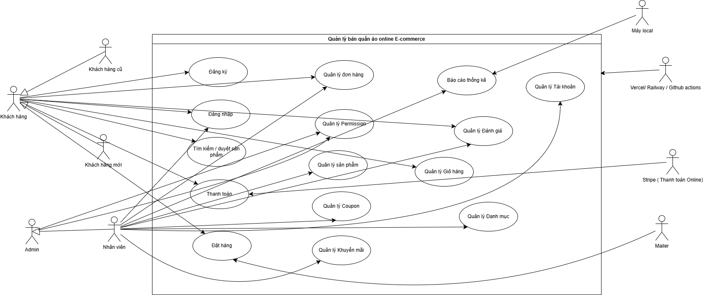
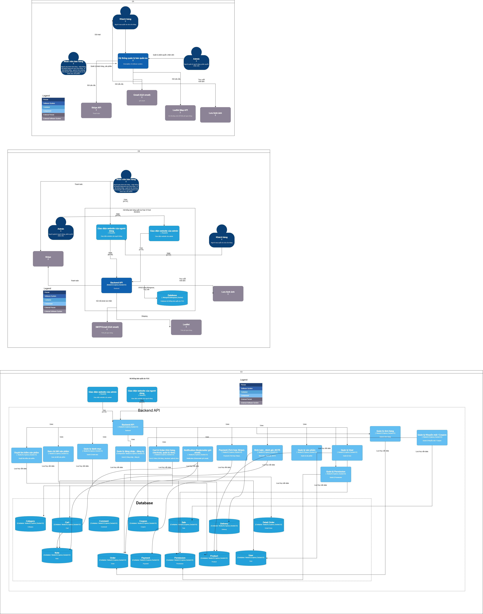
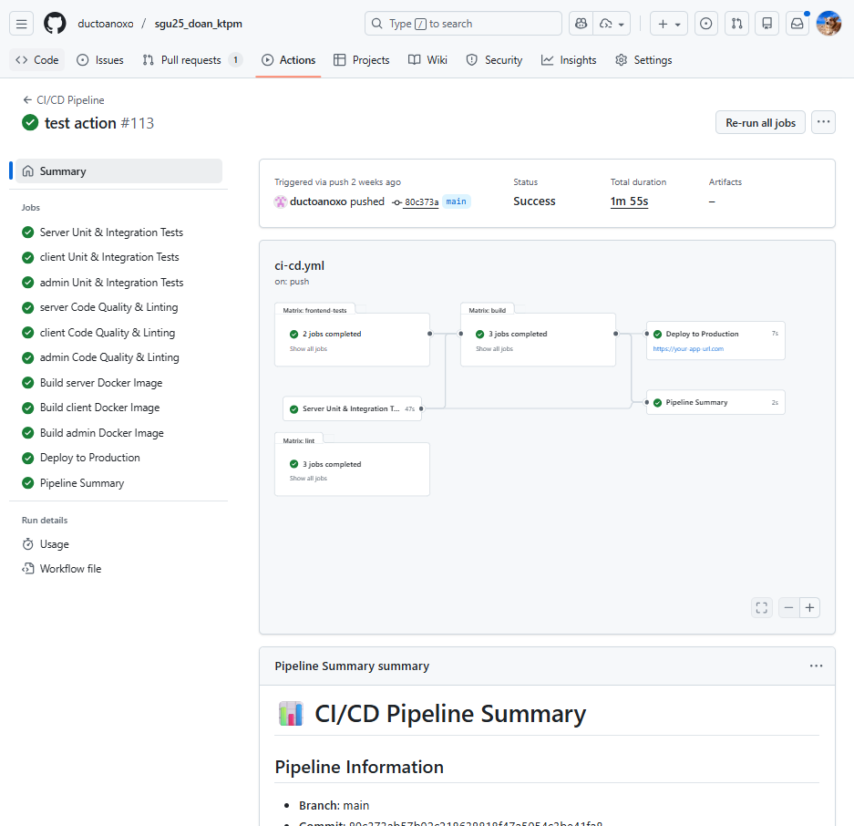
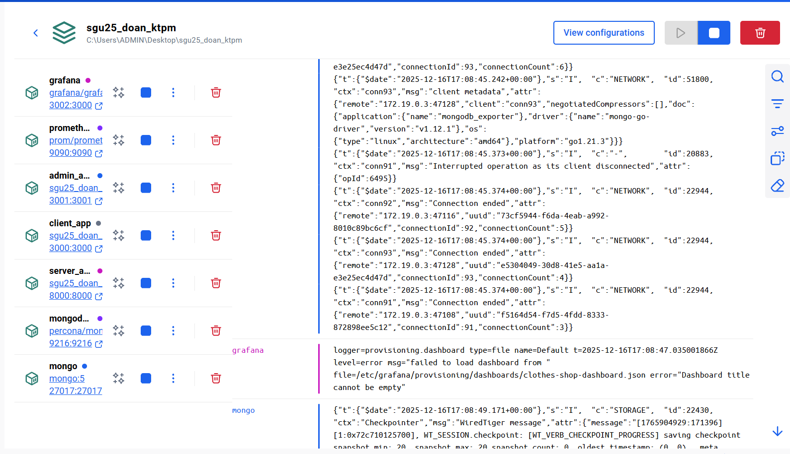

Đảm bảo chất lượng phần mềm (Quality Assurance) và tích hợp liên tục (CI/CD) là xương sống của mọi dự án sản xuất chuyên nghiệp. Trong khuôn khổ môn học Software Testing tại Đại học Sài Gòn (SGU), tôi đã thực hiện thiết kế, phát triển và tối ưu hóa hệ thống kiểm thử toàn diện cho đồ án SGU25_DOAN_KTPM - một website thương mại điện tử kinh doanh thời trang full-stack. Sử dụng Jest, Supertest, Docker, GitHub Actions, Prometheus và Grafana, hệ thống đã kiểm soát tối đa các lỗi nghiệp vụ, tự động hóa đóng gói Docker và giám sát tài nguyên máy chủ thời gian thực.
1. Video Demo Toàn Diện Hệ Thống
Hãy cùng xem video demo tổng thể quy trình chạy và xác thực kiểm thử, từ việc chạy tests ở môi trường phát triển cục bộ (Local Unit/Integration Tests) đến việc tự động hóa chạy tests trên GitHub Actions khi code được tích hợp:
GIF 1: Minh họa quá trình chạy test suites tự động trên Terminal và tích hợp GitHub Actions
2. Phân Tích Thiết Kế & Kiến Trúc Hệ Thống
Hệ thống được thiết kế theo kiến trúc phân tầng rõ rệt, kết nối giữa 3 thành phần chính: Client App (Giao diện khách hàng - React), Admin App (Trang quản trị - React/Bootstrap), và Server App (Backend REST API - Node.js/Express) giao tiếp cơ sở dữ liệu MongoDB Atlas.
Để có góc nhìn trực quan nhất, dưới đây là các biểu đồ thiết kế hệ thống bao gồm Use Case, Context Diagram, Conceptual Model và kiến trúc C4 Model (nhấp vào hình ảnh để phóng to và xem chi tiết):

Sơ đồ Use Case Hệ thống

Sơ đồ ngữ cảnh (Context Diagram)

Sơ đồ khái niệm (Conceptual Model)

Mô hình kiến trúc C4 Model
3. Chiến Lược Kiểm Thử (Testing Strategy)
Chiến dịch kiểm thử của dự án được phân tách thành 3 cấp độ độc lập, giúp cô lập lỗi tốt nhất:
3.1 Kiểm thử Đơn vị (Unit Testing)
Mục tiêu là xác thực tính đúng đắn của logic nghiệp vụ độc lập, cấu trúc dữ liệu và các thao tác DB của Model mà không kết nối với DB thật. Chúng tôi sử dụng MongoDB Memory Server để dựng cơ sở dữ liệu ảo trong RAM (In-Memory Database), giúp tăng tốc độ thực thi test đáng kể.
Đoạn mã cấu hình setup test server ảo (tests/setup.js) để cô lập dữ liệu thử nghiệm:
const { MongoMemoryServer } = require('mongodb-memory-server');
const mongoose = require('mongoose');
let mongoServer;
beforeAll(async () => {
mongoServer = await MongoMemoryServer.create();
const mongoUri = mongoServer.getUri();
await mongoose.connect(mongoUri, {
useNewUrlParser: true,
useUnifiedTopology: true
});
});
afterAll(async () => {
await mongoose.disconnect();
await mongoServer.stop();
});
afterEach(async () => {
const collections = mongoose.connection.collections;
for (const key in collections) {
await collections[key].deleteMany();
}
});
3.2 Kiểm thử Tích hợp (Integration Testing)
Xác thực luồng trao đổi thông tin giữa các API endpoints backend và cơ sở dữ liệu bằng công cụ Supertest. Toàn bộ các API chính của User và Product đã được kiểm thử với độ tin cậy tuyệt đối:
- User Integration (13/13 test cases passed 🎉): Test đăng ký mật khẩu mã hóa bcrypt, đăng nhập cấp JWT token, đổi mật khẩu và cập nhật thông tin cá nhân.
- Product Integration (17/17 test cases passed 🎉): Test tìm kiếm, phân trang sản phẩm, lọc theo danh mục, tính năng infinite scroll, và cơ chế tính toán giá khuyến mãi.
Ví dụ kiểm thử tích hợp API lấy toàn bộ sản phẩm bằng Supertest:
const request = require('supertest');
const app = require('../../../app'); // Express app instance
const Products = require('../../../Models/Products');
describe('GET /api/product', () => {
it('should return all products with status 200', async () => {
await Products.create({
name_product: 'Áo thun SGU',
price_product: 150000,
image: 'aothun.jpg',
number: 50,
gender: 'Unisex'
});
const res = await request(app).get('/api/product');
expect(res.statusCode).toEqual(200);
expect(res.body).toBeInstanceOf(Array);
expect(res.body.length).toBe(1);
expect(res.body[0].name_product).toBe('Áo thun SGU');
});
});
3.3 Kiểm thử Giao diện & Trạng thái (React Testing Library)
Ở phía frontend, các component giao diện React được test bằng React Testing Library kết hợp mock Redux store (client_app) và mock Authentication context (admin_app). Điều này giúp giả lập tương tác người dùng (nhập thông tin đăng nhập, thêm hàng vào giỏ, lọc menu) một cách chuẩn xác mà không cần mở trình duyệt thật.
4. Tích Hợp CI/CD & Đóng Gói Docker
Để quy trình phát triển diễn ra tự động và liên tục, tôi đã thiết lập luồng pipeline **CI/CD** sử dụng **GitHub Actions**:
- Trigger tự động: Bất cứ khi nào lập trình viên đẩy code (push) hoặc tạo Pull Request trên các nhánh
main, develop, hoặc kiet, pipeline sẽ tự động kích hoạt.
- Chạy Test Suites: Pipeline tự động khởi chạy môi trường kiểm thử cô lập, cài đặt dependencies, chạy unit và integration tests của cả 3 folder (server, client, admin) đồng thời. Nếu có bất kỳ test case nào thất bại, quy trình merge code sẽ bị khóa (blocked).
- Dockerization & Đẩy lên GHCR: Sau khi vượt qua vòng kiểm thử, GitHub Actions sẽ build Docker images của backend, client, và admin dashboard. Sau đó, nó tự động đẩy (push) lên GitHub Container Registry (GHCR) bằng biến bảo mật nội bộ
GITHUB_TOKEN mà không cần cấu hình tài khoản Docker Hub thủ công.
- Tự động Triển khai (Continuous Deployment): Code mới nhất trên nhánh
main sau khi vượt qua CI sẽ được tự động trigger deploy lên Railway (Backend API) và Vercel (Frontend Web).

Quy trình tự động hóa CI/CD Pipeline

Mô hình Container hóa các Services bằng Docker
5. Giám Sát Real-Time Bằng Prometheus & Grafana
Khi ứng dụng chạy trên production, việc giám sát tài nguyên và thời gian phản hồi API là cực kỳ quan trọng để phát hiện sớm sự cố (bottleneck, memory leak). Tôi đã cấu hình bộ đôi công cụ:
- Prometheus: Kéo (scrape) metrics đo lường từ backend server ở endpoint
/metrics định kỳ.
- Grafana: Đọc dữ liệu từ Prometheus để trực quan hóa lên các bảng biểu (charts) thời gian thực đẹp mắt.
Một số câu lệnh truy vấn PromQL hữu dụng được cài đặt trên Grafana dashboard của hệ thống:
# 1. Đo tổng số lượng HTTP Requests phân tách theo mã trạng thái
sum by (status_code) (http_requests_total)
# 2. Đo thời gian phản hồi API ở phân vị thứ 95 (95% requests nhanh hơn ngưỡng này)
histogram_quantile(0.95, rate(http_request_duration_seconds_bucket[5m]))
# 3. Giám sát lượng RAM tiêu hao của tiến trình Node.js server (đơn vị MB)
process_resident_memory_bytes / 1024 / 1024
# 4. Đo số lượng kết nối WebSockets (Socket.io) hoạt động thời gian thực
active_connections
6. Trưng Bày Giao Diện Thực Tế Của Hệ Thống (Showcase)
Dưới đây là hình ảnh chụp thực tế giao diện khách hàng, giỏ hàng, trang thanh toán và trang quản trị (Admin Dashboard) của dự án sgu25_doan_ktpm. Hãy nhấp vào hình ảnh để mở zoom lớn và duyệt qua lại xem chi tiết:
7. Kết Luận & Bài Học Kinh Nghiệm
Việc thiết lập hệ thống kiểm thử tự động toàn diện và quy trình tích hợp liên tục (CI/CD) mang lại những lợi ích vượt trội:
- An tâm phát triển: Các nhà phát triển có thể viết mã mới hoặc tối ưu mã cũ mà không sợ làm sập hệ thống (regression), vì đã có suite test tự động bảo vệ.
- Rút ngắn thời gian phát hành: Quá trình build Docker, đẩy registry và deploy diễn ra tự động 100% chỉ trong vài phút thay vì thao tác tay dễ lỗi.
- Giám sát tin cậy: Prometheus & Grafana cung cấp bức tranh rõ ràng về tình trạng "sức khỏe" hệ thống, giúp định hình thời điểm cần mở rộng phần cứng (scale up/out).
Hướng phát triển tiếp theo là tối ưu hóa mã nguồn backend để đẩy chỉ số **Code Coverage** từ mức tối thiểu 30% lên mức an toàn 80% đối với các file Router và Controller nghiệp vụ phức tạp.
8. Tài Liệu Tham Khảo
Các thư viện, công cụ và tài liệu chính thức được sử dụng để xây dựng và kiểm thử hệ thống Clothes Shop:
Quality Assurance (QA) and Continuous Integration/Continuous Deployment (CI/CD) represent the backbone of professional software production. Within the scope of the Software Testing course at Saigon University (SGU), I designed, developed, and optimized a comprehensive testing pipeline for the SGU25_DOAN_KTPM project—a full-stack fashion eCommerce website. Using Jest, Supertest, Docker, GitHub Actions, Prometheus, and Grafana, the system minimizes business logic errors, automates containerized builds, and tracks server resources in real time.
1. System & Testing Workflow Demo
Watch the complete testing workflow demonstration, from running local unit and integration tests to automatically executing the test suite via GitHub Actions upon code integration:
GIF 1: Automated test suites running in terminal and integrated into GitHub Actions
2. Architecture & System Design Analysis
The system utilizes a multi-tier architecture connecting three main components: the Client App (Customer Interface - React), the Admin App (Management Panel - React/Bootstrap), and the Server App (Backend REST API - Node.js/Express) communicating with a MongoDB Atlas cloud database.
To provide a structured layout of the project, here are the system design documents including Use Cases, Context Diagrams, Conceptual Models, and C4 Model diagrams (click to zoom):
Context Diagram
Conceptual Model
3. Testing Strategy & Implementation
The testing campaign of the project is split into three decoupled tiers to maximize bug isolation:
3.1 Unit Testing
Designed to validate isolated business logic, data structures, and database models without making real network calls. We configure a MongoDB Memory Server to spawn a virtual database in RAM, drastically improving test speed.
Here is the setup script (tests/setup.js) configured to isolate our unit testing environments:
const { MongoMemoryServer } = require('mongodb-memory-server');
const mongoose = require('mongoose');
let mongoServer;
beforeAll(async () => {
mongoServer = await MongoMemoryServer.create();
const mongoUri = mongoServer.getUri();
await mongoose.connect(mongoUri, {
useNewUrlParser: true,
useUnifiedTopology: true
});
});
afterAll(async () => {
await mongoose.disconnect();
await mongoServer.stop();
});
afterEach(async () => {
const collections = mongoose.connection.collections;
for (const key in collections) {
await collections[key].deleteMany();
}
});
3.2 Integration Testing
Supertest is utilized to verify API endpoint contracts and database queries. The core backend REST interfaces for User and Product are fully covered:
- User Integration (13/13 test cases passed 🎉): Validates bcrypt password hashing, JWT credentials generation, password updates, and profile edits.
- Product Integration (17/17 test cases passed 🎉): Tests product creation validation, pagination queries, category filters, infinite scrolling, and discount calculations.
Supertest integration test snippet validating product retrieval endpoints:
const request = require('supertest');
const app = require('../../../app');
const Products = require('../../../Models/Products');
describe('GET /api/product', () => {
it('should return all products with status 200', async () => {
await Products.create({
name_product: 'SGU Polo Shirt',
price_product: 150000,
image: 'polo.jpg',
number: 50,
gender: 'Unisex'
});
const res = await request(app).get('/api/product');
expect(res.statusCode).toEqual(200);
expect(res.body).toBeInstanceOf(Array);
expect(res.body.length).toBe(1);
expect(res.body[0].name_product).toBe('SGU Polo Shirt');
});
});
3.3 Frontend Component & Context Testing
On the client-side, frontend modules are tested using React Testing Library by mocking global Redux states (client_app) and authentication providers (admin_app). This mimics client interactions (inputs, cart actions, page routes) without running a full browser.
4. GitHub Actions CI/CD Pipeline & Dockerization
To enforce strict quality checks and deploy automatically, I implemented a robust **CI/CD** workflow powered by **GitHub Actions**:
- Automatic Triggers: Activates on every code push or Pull Request against the
main, develop, or kiet branches.
- Test Execution: Builds a isolated environment to trigger server unit/integration tests alongside client/admin frontend tests. Failure on any single test blocks code merging.
- Docker & GHCR Integration: Post-testing, GitHub Actions compiles Docker images for the server, client, and admin services. Images are pushed to the GitHub Container Registry (GHCR) using the built-in
GITHUB_TOKEN to ensure credentials-free, secure execution.
- Continuous Deployment (CD): Code verified on the
main branch triggers deployment hooks pointing to Railway (Backend) and Vercel (Frontend).
CI/CD Pipeline Automation flow
Docker Container Orchestration
5. Monitoring & Observability with Prometheus & Grafana
To maintain system stability on production, we monitor resources and HTTP metrics to diagnose lags or memory leaks early:
- Prometheus: Periodically scrapes metrics generated by the Node.js server via a dedicated
/metrics route.
- Grafana: Polls Prometheus data sources to output gorgeous visualization dashboards.
Essential PromQL metrics configured in our Grafana dashboard panels:
# 1. Total HTTP requests processed, partitioned by status code
sum by (status_code) (http_requests_total)
# 2. 95th percentile response duration (95% of requests complete faster than this)
histogram_quantile(0.95, rate(http_request_duration_seconds_bucket[5m]))
# 3. RAM consumed by Node.js server engine in MBs
process_resident_memory_bytes / 1024 / 1024
# 4. Total active WebSocket connections monitored dynamically
active_connections
6. System Interface Showcase
View the UI screenshots displaying the client shop interfaces, cart validations, and the admin system dashboard. Click on any thumbnail below to expand the zoomable carousel:
7. Conclusion & Takeaways
Developing this testing suite and automating integration pipelines yields great benefits:
- Confident Development: Developers can confidently refactor existing code knowing that automated tests protect against regression bugs.
- Slashed Time-to-Market: Deployments are fully automated, wrapping code changes inside Docker containers in minutes with minimal friction.
- Observable Infrastructure: Grafana panels deliver complete transparency, revealing precise periods for hardware scaling (vertical or horizontal).
Moving forward, the primary goal is expanding code coverage from the initial 30% baseline to a targeted 80% across backend controller and router scripts.
8. References
Official documentation and libraries used to design, build, and validate the testing suite and CI/CD pipelines:
Jest Docs
Reference for writing Unit Tests, test runners, mocking functions, and Jest configs.
Supertest Docs
Reference for integration testing HTTP API endpoints and making test requests.
Mongo Memory Server
Reference for running a virtual MongoDB database inside RAM for isolated unit tests.
GitHub Actions Docs
Reference for building automated workflows, caching, docker builds, and GHCR.
Docker Docs
Reference for containerizing services, writing Dockerfiles, and compose configurations.
Prometheus & Grafana
Reference for metrics scraping, PromQL monitoring commands, and visual dashboards.